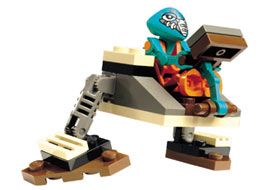

Production Design Target
ОФІЦІЙНИЙ ВИГЛЯД · без змін

Саме цей офіційний завершений вигляд LEGO 7302 є Production Target. Зберегти низькі трохи широкі пропорції, симетрію, відкритого оператора, важіль панелі та короткі ноги з широкими трикутними стопами.